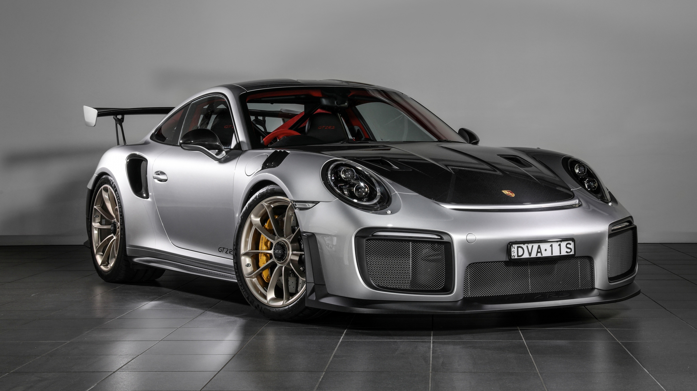

PORSCHE 911 GT3 RS
| USP | Special Features | Starting Price |
|---|---|---|
| Track-focused Supercar | Carbon Fibre Body Parts | $400,000 |
The high-performance 911 GT3 RS is road-approved yet track-ready. A naturally aspirated engine and carbon fibre reinforced plastic help achieve an ultra-light 1,450 kg build.The parts made of CFRP include the doors, front wings, roof, bonnet and rear lid.Optimised for use on a race track: the chassis with a wide track. Among other things, it ensures high lateral dynamics and improved anti-dive during braking.
Explore Porsche 911 GT3 RS →PORSCHE Macan
| USP | Special Features | Starting Price |
|---|---|---|
| Luxury Compact SUV | Sport Chrono Package, Adaptive Suspension | $120,000 |
The inline four-cylinder turbo engine in the Macan delivers maximum performance and efficiency even with its small size. The optional air suspension including PASM adapts to different driving situations: high level I, normal level and low level. It is characterised by its high drag torque and efficiency.
Explore Porsche Macan →PORSCHE Panamera
| USP | Special Features | Starting Price |
|---|---|---|
| Luxury Sport Sedan | 4–5 Seat, Matrix LED, Active Ride | $180,000 |
The Panamera models are equipped with adaptive air suspension including Porsche Active Suspension Management (PASM) with Matrix LED headlights as standard. Panamera blends performance and comfort with air suspension and LED tech. Hybrid models offer Porsche Active Ride for superior dynamics.
Explore Porsche Panamera →